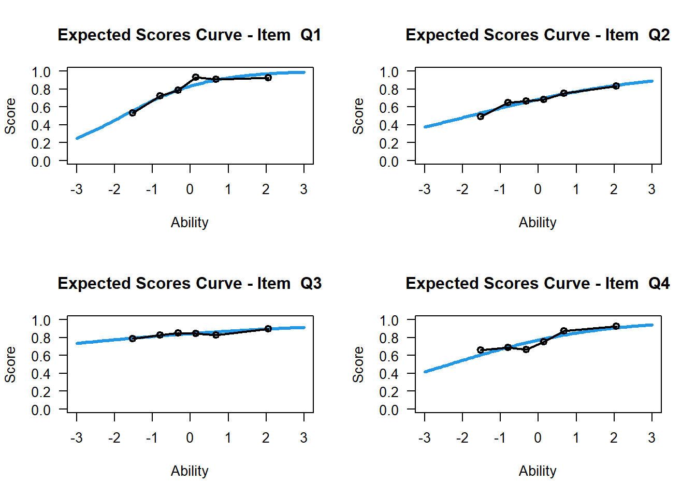

答对率法：传统方法，难度会因为样本不一样而改变
逻辑曲线模拟试题难度 (0,1 response)
Logistic Cure or Item characteristic cure (ICC), is a function relating the probability of correct response to the ability scale.
\[P_i(\theta)=P(U_i=1|\theta)\]
To include the covariates
\[P(U_i|\theta,b_i)=\frac{e^{\theta-b_i}}{1+e^{\theta-b_i}}\]
where \(b_i\) is the item difficulty parameter.
Example:
\[P_1(\theta)=\frac{e^{\theta+1}}{1+e^{\theta+1}}, \quad P_2(\theta)=\frac{e^{\theta-1}}{1+e^{\theta-1}}\] 一条逻辑曲线就是一套试题
When \(\theta=b_i\), we say that the ability match the difficulty of the tests and we say \(P_i=0.5\).
In practice, we set \(b_i \in (-3,3)\). The larger \(b_i\), the harder item.
把学生能力和试题对比，差生答对难题的概率很低
可以和古典的 CTT对比
Does the model fit the data well?
Residual-based fit statistics 残差验证不好
\[P_i(\theta)=P(U_i=1|\theta), \quad \mathbb{E}(U_{ji})=P(U_i=1|\theta=\theta_j)\]
试图标准化 标注差
Variance (Bernulli Distribution)
\[Var(U_{ji})=P(U_i=1|\theta_j)(1-P(U_i=1|\theta_j))=0.05\times 0.95=0.0475\] 假设A每次答对的概率是0.05，所以variance很小
如果B能力更强，答对的概率是0.43，那么对应的variance会是 \[Var(U_{ji})=P(U_i=1|\theta_j)(1-P(U_i=1|\theta_j))=0.43\times 0.57=0.2451\]
如果C是个学霸，答对的概率是0.91,variance也很小
\[Var(U_{ji})=P(U_i=1|\theta_j)(1-P(U_i=1|\theta_j))=0.91\times 0.09=0.0819\] 可以相对应的算标准差， 随着能力（\(\theta\)）的变化，两边小中间大
Error Bar
When a item is ‘off-target’ (too easy or too hard for a person), the variance is relatively small.
Standardized Residual
\[Z_{ji}=\frac{U_{ji}-\mathbb{E}(U_{ji})}{\sqrt{Var(U_{ji})}}\]
Outfit Mean-square Value (MNSQ)
\[outfit_i=\frac{1}{N}\sum_{j=1}^Nz^2_{ji}\]
Under-fit (bad qustions)
There is a standard in Linacre (2006)
Reference
单参数模型只是进行了平移，并没有改变曲线的形状 \[P_i(\theta)=\frac{e^{\theta-b_i}}{1+e^{\theta-bi}}\]
双参数给了一个shape parameter
\[P_i(\theta)=\frac{e^{a_i(\theta-b_i)}}{1+e^{a_i(\theta-b_i)}}\]
In the Rasch model, the discrinimation parameters of two-parameter logistic models are set to 1, which are equal to the one-parameter logistic models, or they are set to the same value \(a>0\) \[P_i(\theta)=\frac{e^{a_i(\theta-b_i)}}{1+e^{a_i(\theta-b_i)}}\]
Classical Test Theory and Item Response Theory
Remedial Course
In traditional method such as classical test theory (CTT)/unidimensional item response theory (UIRT), teachers only use total scores abilities to compare students’ learning performance.
Moreover, some students may have the same total score but their mastering skills are differet.
In recent remedial teaching, most teachers use the same learning materials for the students whose total score below than a threshold. 缺点总结，如何改进呢？
Guessing on an item 有些题是可以猜的IRT可以考虑猜的问题。可以再加一个参数
\[[0,1] \rightarrow [0.2,1]\]
\[P_i(\theta)=c_i+(1-c_i)\frac{e^{a_i(\theta-b_i)}}{1+e^{a_i(\theta-b_i)}}\]
library(CTT)
library(TAM)
library(stringi)
library(tidyverse)
library(readxl)
<<<<<<< HEAD
######setwd("~/Item_Repsone_Theoryu")
=======
#setwd("~/Item_Repsone_Theoryu")
>>>>>>> 6ec63c748f6f0c1ca3489b3d9f37e0ed4d4cf2fc
data1<-read_excel('mth017_mid.xlsx')
data1<-data1 %>% select(2:29)
data2<- apply(data1,2,function(x) str_sub(x,-1,-1))
answer_key<-str_sub(c('1A','2B','3B','4A','5A','6B','7D','8A','9D','10B','11A','12B','13D','14A','15C','16B','17B','18C','19C','20E','21A','22B','23C','24C','25B','26C','27D','28C'),-1,-1)
CTT_score<-score(data2,answer_key,output.scored=T)
#CTT_score$scoredlibrary(TAM)
logit1<-tam(CTT_score$scored)Then, we can extract the results
Variance
EAP Reliability
\[\xi\] difficulty level
logit1$xsi## xsi se.xsi
## Q1 -1.59926777 0.08281262
## Q2 -0.87725851 0.07202691
## Q3 -1.90311723 0.08976346
## Q4 -1.33502667 0.07799604
## Q5 -0.89807107 0.07223796
## Q6 -0.76986328 0.07102422
## Q7 -2.23135689 0.09919926
## Q8 -1.44079642 0.07979522
## Q9 -2.30183976 0.10151477
## Q10 -2.43094886 0.10604360
## Q11 -2.56032583 0.11097420
## Q12 -1.40918138 0.07923986
## Q13 -0.87725851 0.07202691
## Q14 -2.23135689 0.09919926
## Q15 -2.11750397 0.09568201
## Q16 0.98265790 0.07347639
## Q17 -0.71971933 0.07060485
## Q18 -0.46702688 0.06894949
## Q19 -0.20028860 0.06800319
## Q20 0.03460549 0.06783063
## Q21 1.05917803 0.07440211
## Q22 -1.06392137 0.07411938
## Q23 -1.42195321 0.07958271
## Q24 -0.27688957 0.06825164
## Q25 0.09725406 0.06793617
## Q26 1.28306039 0.07758691
## Q27 -3.04702670 0.13434881
## Q28 -0.61939615 0.07052947outfit
Mean Sum of Squares
msq.itemfit(logit1)## $itemfit
## item fitgroup Outfit Outfit_t Outfit_p Infit Infit_t
## 1 Q1 1 1.0347685 0.4818066 6.299433e-01 0.9912975 -0.17320946
## 2 Q2 2 1.1716954 3.4849119 4.922990e-04 1.1069666 3.42539202
## 3 Q3 3 1.3379417 3.4078406 6.547912e-04 1.1098902 1.92729057
## 4 Q4 4 1.0902137 1.3983988 1.619934e-01 1.0814110 2.02344514
## 5 Q5 5 1.0435298 0.9180836 3.585751e-01 1.0559496 1.80499159
## 6 Q6 6 0.9731329 -0.6066728 5.440681e-01 0.9939642 -0.20191154
## 7 Q7 7 0.9798463 -0.1487582 8.817445e-01 1.0250889 0.39061237
## 8 Q8 8 0.8053456 -3.0437477 2.336510e-03 0.9101186 -2.19142974
## 9 Q9 9 0.7943306 -1.9064873 5.658701e-02 0.9350246 -0.91924611
## 10 Q10 10 0.8831100 -0.9528263 3.406781e-01 0.9576733 -0.53949162
## 11 Q11 11 0.7714293 -1.8446576 6.508737e-02 0.9446390 -0.66089618
## 12 Q12 12 0.8423894 -2.4752825 1.331308e-02 0.9351401 -1.59405400
## 13 Q13 13 1.1888686 3.8127712 1.374173e-04 1.1169149 3.73164996
## 14 Q14 14 0.7586028 -2.3733985 1.762524e-02 0.9165098 -1.24859960
## 15 Q15 15 0.8869466 -1.1119450 2.661618e-01 0.9476972 -0.82157836
## 16 Q16 16 0.9831814 -0.3261385 7.443195e-01 0.9706989 -0.88625362
## 17 Q17 17 0.9646798 -0.8325860 4.050782e-01 0.9862963 -0.48424012
## 18 Q18 18 0.9362587 -1.7919554 7.314012e-02 0.9603251 -1.59940516
## 19 Q19 19 0.9084037 -2.9405247 3.276569e-03 0.9325556 -2.95185450
## 20 Q20 20 1.2004735 6.0935245 1.104514e-09 1.1643863 6.77364610
## 21 Q21 21 0.8718964 -2.5604157 1.045470e-02 0.9051799 -2.83538677
## 22 Q22 22 0.9740119 -0.4751644 6.346698e-01 0.9731290 -0.79567373
## 23 Q23 23 1.0107089 0.1807381 8.565731e-01 0.9998988 0.01146576
## 24 Q24 24 1.0305632 0.9296578 3.525483e-01 1.0254545 1.07482170
## 25 Q25 25 0.8715860 -4.3106993 1.627391e-05 0.8971613 -4.58780807
## 26 Q26 26 1.3231286 4.8919183 9.985788e-07 1.1084814 2.69280559
## 27 Q27 27 0.8721382 -0.7189141 4.721938e-01 0.9616159 -0.31991895
## 28 Q28 28 1.0204622 0.5202281 6.029046e-01 1.0170094 0.63717621
## Infit_p
## 1 8.624868e-01
## 2 6.139129e-04
## 3 5.394343e-02
## 4 4.302727e-02
## 5 7.107600e-02
## 6 8.399859e-01
## 7 6.960838e-01
## 8 2.842071e-02
## 9 3.579669e-01
## 10 5.895477e-01
## 11 5.086789e-01
## 12 1.109239e-01
## 13 1.902297e-04
## 14 2.118116e-01
## 15 4.113169e-01
## 16 3.754809e-01
## 17 6.282155e-01
## 18 1.097306e-01
## 19 3.158717e-03
## 20 1.255766e-11
## 21 4.577024e-03
## 22 4.262217e-01
## 23 9.908518e-01
## 24 2.824546e-01
## 25 4.479241e-06
## 26 7.085357e-03
## 27 7.490298e-01
## 28 5.240101e-01
##
## $summary_itemfit
## fit M SD
## Outfit Outfit 0.9832016 0.15345336
## Infit Infit 0.9975171 0.07384753
##
## $time
<<<<<<< HEAD
## [1] "2022-08-07 19:08:55 CST" "2022-08-07 19:08:55 CST"
=======
<<<<<<< HEAD
## [1] "2022-07-11 16:09:48 CST" "2022-07-11 16:09:49 CST"
=======
## [1] "2022-01-01 03:03:17 CST" "2022-01-01 03:03:17 CST"
>>>>>>> 6ec63c748f6f0c1ca3489b3d9f37e0ed4d4cf2fc
>>>>>>> 8f3810addf9025cb3da1c3624e2a5e05cbdd710a
##
## $CALL
## msq.itemfit(object = logit1)
##
## attr(,"class")
## [1] "msq.itemfit"plot(logit1,item=1)## Iteration in WLE/MLE estimation 1 | Maximal change 1.3867
## Iteration in WLE/MLE estimation 2 | Maximal change 0.1743
## Iteration in WLE/MLE estimation 3 | Maximal change 0.0075
## Iteration in WLE/MLE estimation 4 | Maximal change 3e-04
## Iteration in WLE/MLE estimation 5 | Maximal change 0
## ----
## WLE Reliability= 0.748## ....................................................
## Plots exported in png format into folder:
## /Users/yuexuezhang/Documents/Item Response Theory/Item_Repsone_Theoryu/PlotsTwo Parameter IRT
logit2<-tam.mml.2pl(CTT_score$scored)logit2$item## item N M xsi.item AXsi_.Cat1 B.Cat1.Dim1
## Q1 Q1 1019 0.7998037 -1.60381101 -1.60381101 0.9007187
## Q2 Q2 1019 0.6790972 -0.78235045 -0.78235045 0.4302560
## Q3 Q3 1019 0.8400393 -1.67493255 -1.67493255 0.2209369
## Q4 Q4 1019 0.7595682 -1.21737246 -1.21737246 0.5178603
## Q5 Q5 1019 0.6830226 -0.84523068 -0.84523068 0.6661962
## Q6 Q6 1019 0.6584887 -0.77225130 -0.77225130 0.8883296
## Q7 Q7 1019 0.8763494 -2.18232206 -2.18232206 0.8048515
## Q8 Q8 1019 0.7762512 -1.87736494 -1.87736494 1.7506024
## Q9 Q9 1019 0.8832188 -2.72542893 -2.72542893 1.5053565
## Q10 Q10 1019 0.8949951 -2.72739891 -2.72739891 1.3265451
## Q11 Q11 1019 0.9057900 -3.10171074 -3.10171074 1.6050825
## Q12 Q12 1019 0.7713445 -1.65843064 -1.65843064 1.4237493
## Q13 Q13 1019 0.6790972 -0.77514562 -0.77514562 0.3790075
## Q14 Q14 1019 0.8763494 -2.80417862 -2.80417862 1.7031549
## Q15 Q15 1019 0.8645731 -2.36251740 -2.36251740 1.2899213
## Q16 Q16 1019 0.3002944 1.00989988 1.00989988 0.9982508
## Q17 Q17 1019 0.6486752 -0.76601362 -0.76601362 1.0711876
## Q18 Q18 1019 0.5976447 -0.50572989 -0.50572989 1.1007193
## Q19 Q19 1019 0.5417076 -0.23738822 -0.23738822 1.2571553
## Q20 Q20 1019 0.4916585 0.03366769 0.03366769 0.2793225
## Q21 Q21 1019 0.2865554 1.26136773 1.26136773 1.4974795
## Q22 Q22 1019 0.7134446 -1.10583136 -1.10583136 1.0118460
## Q23 Q23 1017 0.7738446 -1.43072636 -1.43072636 0.9095113
## Q24 Q24 1017 0.5585054 -0.26842353 -0.26842353 0.7575731
## Q25 Q25 1017 0.4788594 0.09734073 0.09734073 1.5325850
## Q26 Q26 1017 0.2487709 1.13862560 1.13862560 0.3651024
## Q27 Q27 1010 0.9386139 -3.42856477 -3.42856477 1.3780092
## Q28 Q28 1001 0.6313686 -0.60773020 -0.60773020 0.8094293AXsi_.Cat1 is the difficulty level
B.Cat1.Dim1 is the discrimination level
par(mfrow=c(2,2))
for(i in 1:4){
plot(logit2,items=i)
}